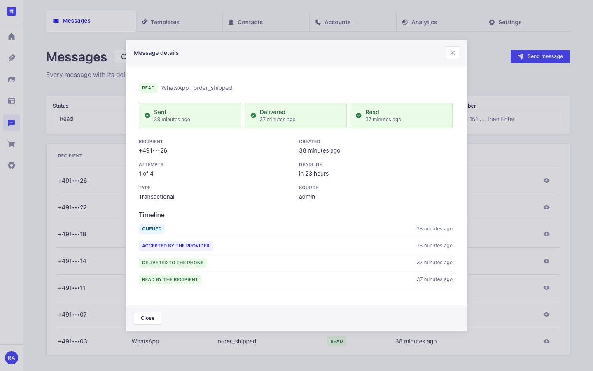
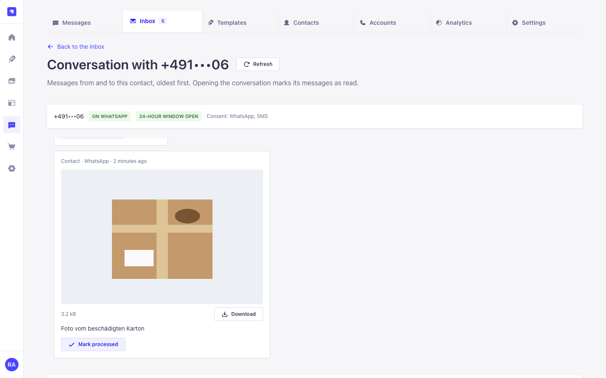
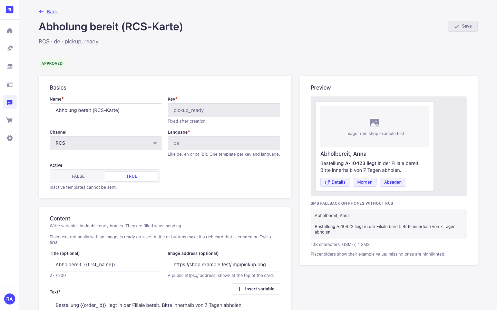
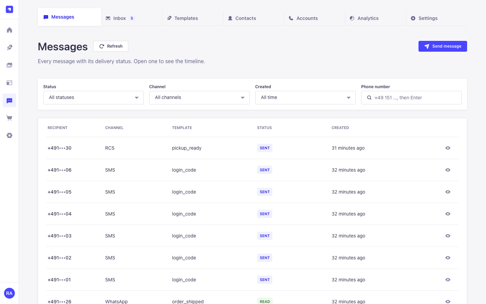
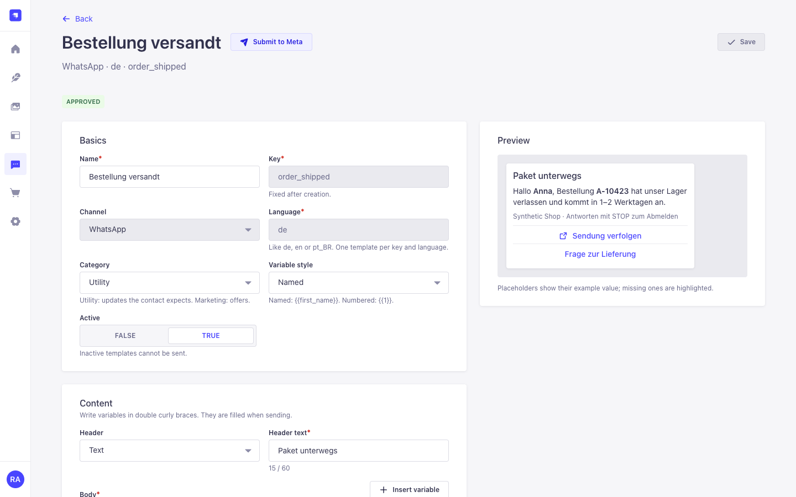
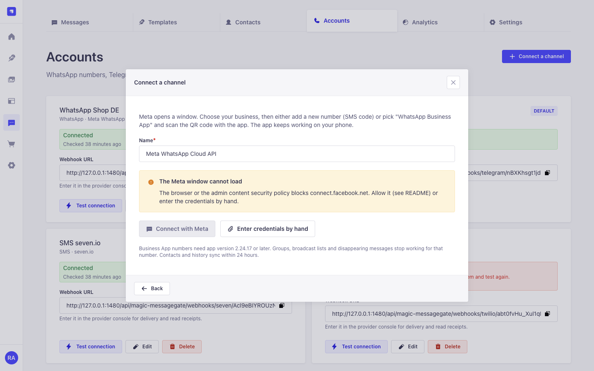
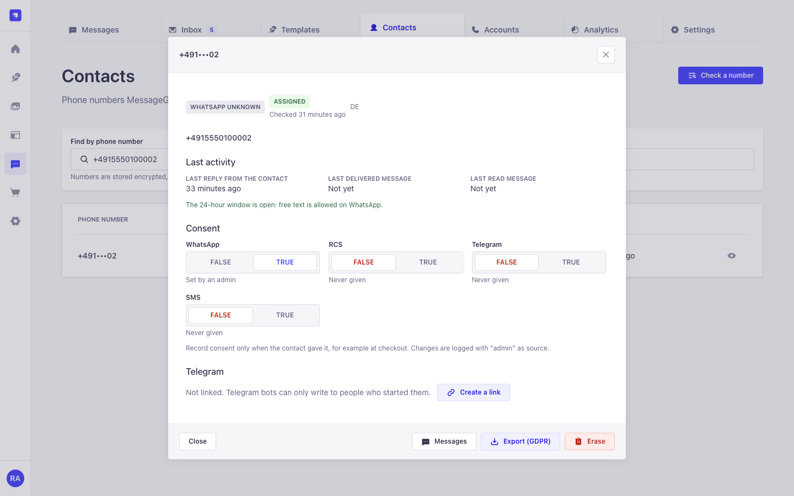
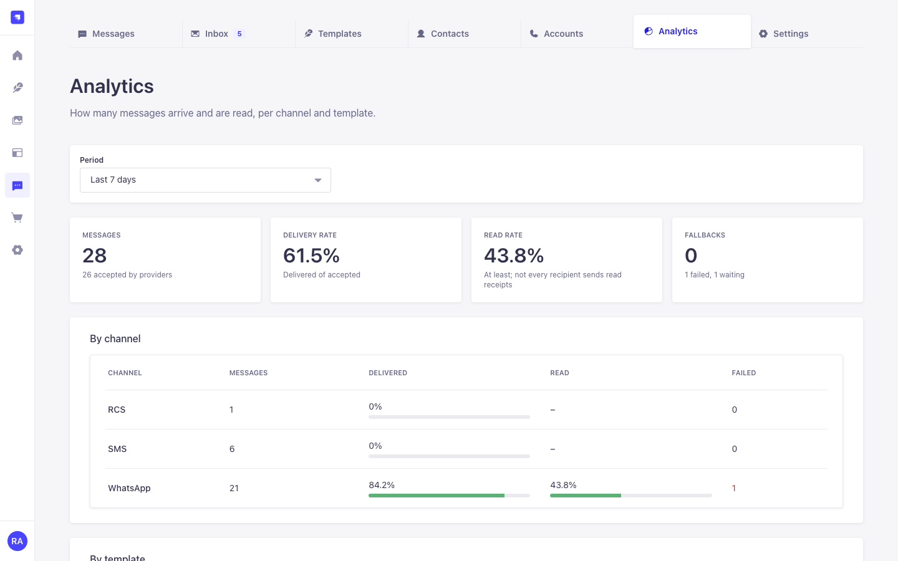
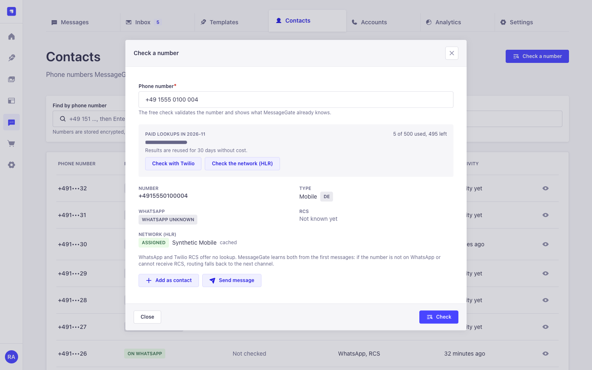

Four channels, one API
WhatsApp through Meta's Cloud API, RCS through Twilio, Telegram through the Bot API, SMS through seven.io or Twilio. No vendor SDKs.
Magic MessageGate is a free, MIT-licensed Strapi 5 plugin that sends WhatsApp, RCS, Telegram and SMS messages through the official provider APIs, exactly once, and turns replies into events your code can answer.
Send a template or a file with one call. MessageGate picks the channel, tracks each message to delivered and read, and falls back to RCS and SMS when WhatsApp can't reach the number.



^5.38.0^22.21.0 || >=24.9.0 <=26.x.xWhatsApp through Meta's Cloud API, RCS through Twilio, Telegram through the Bot API, SMS through seven.io or Twilio. No vendor SDKs.
Variables, a preview per channel and the SMS part count. WhatsApp templates are submitted to Meta from Strapi, and their approval status updates by itself.
A durable outbox in your database. Each message goes out once, also with several Strapi processes. The same idempotency key never sends twice.
Every message has a timeline, and failures come with a reason in plain language.
WhatsApp → RCS → SMS. Numbers that aren't on WhatsApp or can't receive RCS are remembered. Set the channel order per template, tag or country. E-mail through Magic Mail is opt-in and off by default.
Consent per channel, STOP keywords, export and erasure per contact. Phone numbers are stored encrypted.
A free format check, plus optional paid checks with one cache and budget: Twilio line type and seven.io HLR. Sends to unassigned numbers can stop before they cost anything.
PDF, images and videos from the media library or a public https URL. SMS gets a short signed link that expires.
Replies, buttons, photos, documents, voice notes and locations arrive once as an event. Files are checked and stored in the media library. Answer from code or from the admin.
A dry run shows the route and message without sending. A sandbox with magic test numbers runs app tests without network or cost.
Retries only when the provider provably didn't take the message. An unknown outcome becomes uncertain, and an admin decides.
People often ask for things the providers don't offer. Here is what is possible.
| Question | Telegram | SMS | MessageGate | |
|---|---|---|---|---|
| Does the number exist? | No check before sending; error 131026 on the first send means "not on WhatsApp" | Only for people who started your bot | Paid carrier lookups | Free format check, optional paid lookup, learns from the first send |
| Can it receive RCS? | – | – | Twilio has no RCS check | Tries RCS, learns from error 63036, falls back to SMS |
| Is the person online? | Not available | Not available | Not available | Shows the last activity instead |
| Has the person read it? | Yes, unless read receipts are off | No read receipts for bots | Delivery receipt only | Timeline per message, read rate per template (a lower bound) |
Built only from the Strapi Design System. Every screen works in light and dark mode and at phone width.








Install the package:
npm install strapi-plugin-magic-messagegateEnable it in config/plugins.js:
module.exports = ({ env }) => ({
'magic-messagegate': {
enabled: true,
config: {
encryptionKey: env('MESSAGEGATE_ENCRYPTION_KEY'), // 16+ characters, never change it later
publicUrl: env('PUBLIC_URL'), // used for webhook URLs
},
},
});Build and start Strapi, then open MessageGate in the admin menu.
Accounts → Connect a channel. SMS (seven.io or Twilio) or Telegram (a bot token from @BotFather) are the quickest first test.
Templates → Create template, then send it from Messages → Send message.
You need a Meta business portfolio, a Meta app with the WhatsApp product and a payment method. Meta charges per
delivered template message (pricing).
Connect a new number, or your existing WhatsApp Business App number by QR code (coexistence), through
Connect with Meta, or paste the credentials by hand. For the Meta window, allow
https://connect.facebook.net in script-src and https://www.facebook.com
in frame-src of Strapi's security middleware. The
README has the full setup.
const { id, status, channel, duplicate } = await strapi
.plugin('magic-messagegate')
.service('messages')
.send({
to: '+4915123456789',
template: 'order_shipped',
language: 'de',
variables: { first_name: 'Anna', order_id: 'A-10423' },
idempotencyKey: 'order-shipped-A-10423',
});curl -X POST https://cms.example.com/api/magic-messagegate/messages \
-H "Authorization: Bearer $STRAPI_API_TOKEN" \
-H "Content-Type: application/json" \
-d '{"data":{"to":"+4915123456789","template":"order_shipped","variables":{"first_name":"Anna","order_id":"A-10423"}}}'
The Content API accepts Strapi API tokens only. It answers 202 for a new message and
200 with duplicate: true for a repeated idempotency key, and the plan without
sending for "dryRun": true. Other routes: GET /messages/:id,
POST /consent, POST /telegram-link, POST /lookup,
POST /capabilities, POST /templates/render, and for inbound messages (a separate
permission) GET /inbound, GET /inbound/:id/media,
POST /inbound/:id/reply, GET /conversations/:contactId.
const mg = strapi.plugin('magic-messagegate');
mg.service('inbound').onReceived(async ({ inboundId, buttonPayload }) => {
const message = await mg.service('inbound').get(inboundId); // text, button, location, media
const { items } = await mg.service('conversations').history({ inboundId });
await mg.service('messages').reply(inboundId, { text: 'Thanks, we are on it.' });
await mg.service('inbound').markProcessed(inboundId);
});
Files: inbound.getMedia(id, { as: 'buffer' | 'stream' | 'base64' }) or a short-lived signed URL
with inbound.createMediaUrl(id). Optional: forward events to your own https endpoint, signed with
HMAC-SHA256.
// config/env/test/plugins.js
const { sandboxConfig } = require('strapi-plugin-magic-messagegate/testing');
module.exports = { 'magic-messagegate': { enabled: true, config: sandboxConfig() } };
Magic test numbers decide the outcome (read, not on WhatsApp, no RCS, undelivered, uncertain, unassigned).
sandbox.simulateInbound() feeds replies and files into your automations.
strapi.eventHub.on('messagegate.message.failed', ({ messageId, channel, code }) => {
strapi.log.warn(`Message ${messageId} on ${channel} failed: ${code}`);
});The full contract, with every field, status, event and error code, is in AGENTS.md. For AI tools: llms.txt and llms-full.txt.
config/plugins.js holds the infrastructure options: encryption key, public URL, worker interval
and concurrency, retry delays, rate limits, provider timeouts and the Meta app for Embedded Signup. Business
rules live on the Settings page: consent, opt-out keywords, channel chain, routing rules,
e-mail fallback (off by default), lookups and their budget, inbox and inbound files, the outgoing webhook and
retention. The
README lists both with defaults.
All state lives in the database, so Railway replicas or a pm2 cluster share it without sticky sessions. In the acceptance run, 8 processes on one PostgreSQL database sent 500 messages with 0 duplicates. When a deploy changes tables, start one replica first.
zod and libphonenumber-js.Report vulnerabilities privately through GitHub security advisories.
No. Neither Meta's Cloud API nor Twilio has such a check. MessageGate learns it from the first send and falls back to the next channel. Unofficial WhatsApp checks are not used.
No. E-mail is an opt-in last step of the chain that hands the message to Magic Mail; it is off by default.
The request reached the provider, but no clear answer came back in time. The provider may or may not have the message, so sending again could deliver it twice. An admin can retry it (after confirming the risk) or mark it as sent.
Only within 24 hours after the contact last wrote to you. Outside that window, Meta requires an approved template.
No. Only a WhatsApp Business App number (coexistence) or a new number can be connected through the official API.
MessageGate is free (MIT). The providers charge you: Meta per delivered WhatsApp template message, Twilio per RCS message, seven.io or Twilio per SMS, and paid lookups if you turn them on. Telegram and the sandbox are free.
Versions follow semantic versioning and are published to
npm. Changes and migration notes
are in the changelog.
MessageGate replaces the unpublished magic-whatsapp plugin, which drove WhatsApp Web through an
unofficial library; see the
migration notes.